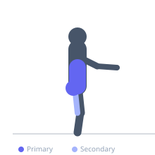
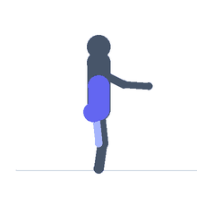

Exercise guide / Hip 90-90 with Reach and Thoracic Twist
Hip 90-90 with Reach and Thoracic Twist
A combined hip mobility and thoracic rotation exercise built on the 90-90 position. While seated in the 90-90 hip configuration, the exerciser rotates the thoracic spine toward the front leg while reaching the same-side arm forward and the opposite arm backward. This integrates thoracic rotation with hip external rotation mobility, training both simultaneously and improving the movement coupling required for many athletic and functional tasks.
Primary muscles
gluteus maximus
erector spinae
internal oblique
Secondary muscles
adductor magnus
external oblique
Equipment
No Equipment (Bodyweight)


Starting position
- Sit in the 90-90 position with the right leg externally rotated in front and the left leg internally rotated behind. Both shins on or close to the floor.
Setup
- Hands can be lightly on the floor to begin. Remove hand support as ability improves.
Steps
- Step 1: Begin in the 90-90 position, seated upright.
- Step 2: Rotate the torso toward the right (front) leg, reaching the right arm forward and the left arm back.
- Step 3: Hold the rotated position for 2-3 seconds, feeling the combined hip and thoracic stretch.
- Step 4: Return to center. Rotate to the opposite side, reaching the left arm forward and right arm back. Hold 2-3 seconds. Alternate sides.
Coaching cues
- Let the thoracic spine lead the rotation — not the hips
- Reach long through both arms — the reach amplifies the thoracic rotation
- Feel the hip of the front leg staying anchored while the upper body rotates
Breathing
- Exhale as you rotate and reach. Inhale as you return to center.
Range of motion
- Full thoracic rotation available from this hip position. The hip position is maintained; only the thorax rotates.
Tempo
- 2s rotation, 2-3s hold, 2s return to center.
Common mistakes
- Rotating through the lumbar rather than the thoracic spine — the rotation should come from the mid and upper back
- Lifting the knees from the floor to assist the rotation — maintain the 90-90 hip configuration
- Using a very limited range — the thoracic rotation should be substantial
Safety
- If lumbar pain occurs during the rotation, reduce the rotation range and focus on thoracic movement only
- If hip pain is aggravated by the 90-90 position, check with a physiotherapist
Training
- mobility: 5–10 reps
- mobility: 2–3 sets
- Rest: {'mobility': 60}